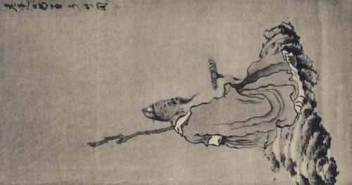
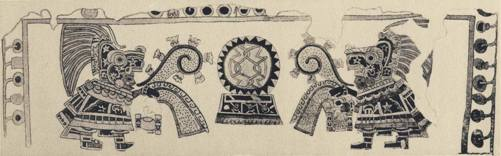
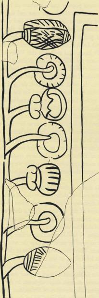
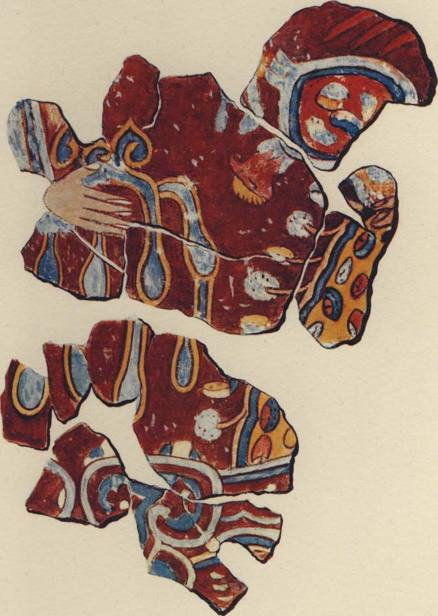
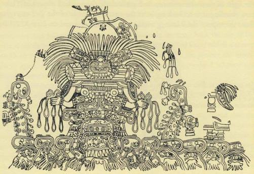
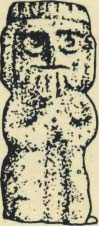

if, as we believe, the hallucinatory mushroom persists even today as a major
theme in the emotional and religious lives of many of the more withdrawn Indian
peoples of Oaxaca, and if, as we believe, the i6th century writers bear witness
to the important role of the mushroom in the Indian cultures as far north as the
Valley of Mexico and among the Otomi and Tarascan peoples, it is fair to look
for the mushroom also in the archeological evidence of far earlier times. That
archeologists have not revealed it to us is not necessarily conclusive - they
have not been on the lookout for it. Furthermore, in spite of the spectacular
discoveries made in Middle America by archeologists in the past, what they
have done until now may some day seem only a beginning by comparison with
the discoveries that he in the future, so many are the major sites that have not
been fully explored or even touched.
There is the further question of the role that the mushroom might be expected
to have played in Middle American art. On this a priori opinions are of little
value. In Christian art the cross as a symbol is all-pervasive, and it would be
natural to look for the mushroom in a similar role. If we are right, the mush-
room stones of the early Maya periods in the highlands confirm this analogy.
But it does not follow that a major idea always receives corresponding direct
emphasis in art. Take for example the Host in the Christian world, the Divine
Wafer that is the daily reiteration of the Christian's faith in the miracle of
Christ's unique mission on earth. The Mass is the very heart of all Christian
liturgy, and the Mass hangs on the elements of Bread and Wine. By comparison
with its importance the bread of the Sacrament appears surprisingly seldom in
religious paintings. In representations of the Last Supper the faces of Christ and
the Apostles take priority over the loaf. For more than a thousand years the
best artistic talent was occupied with representing altars, ecclesiastics habited
to officiate at Mass, and churches that housed the altar and the Sacrament. All
of this pictorial eloquence took for granted the central feature, the miracle of
transubstantiation and the Holy Communion. How seldom, relatively, did the
artist stop to paint the Host itself! So may it have been with the mushrooms in
pre-Columbian Mexico. We may discover its accidental appearance and at the
same time begin to sense its constructive presence there where it does not appear.
In 1954 Mrs. Irmgard Johnson drew our attention to certain mushroomic
322
PLATE LII Chinese sage
contemplating Ling-chih, the Divine Mushroom.
Painted by Chen Hung-shou (1599-1652), probably late in life in early years of Ching dynasty. This artist
was an eminent figure- and landscape-painter, known as an individualist. 'Lao-lien' and 'Chang-hou' were his
fancy names. 'Hua yu' means 'painted in', and 'Chu-ko' means 'Bamboo Pavilion',
doubtless a studio that he frequented.
Reproduced by courtesy of Wango Weng, Esq.


PLATE LIII. Teopancalco fresco. Teotihuacan, in the Valley of Mexico.
From Teotihuacan III period, A.D. 300-600.
THE DIVINE MUSHROOM
shapes in the border of the famous Teopancalco (or Teopancaxco) fresco in
Teotihuacan. Discovered in 1894, this fresco was carefully copied soon after-
wards by Dr. Antonio Penafiel and Miss Adela Breton.1 Two pre-Columbian
priests facing each other are engaged in a rite, wearing the vestments of their
office, their heads burdened with serpent masks. It is supposed that they are
pouring pulque on the ground, and if so the rite is associated with inebriation
and divine possession. In the center, between the two priests, is a motif of inter-
laced cords, symbol of the mat (petate) that is in its turn a symbol of authority
in Middle America. It is surrounded by a circle of outward pointing triangles,
and this design rests on a ceremonial stand. The border consists of a sequence
of repeated motifs. On the right hand side are three shapes that look mush-
roomie, separated from each other by designs that we know represent sea-
shells. The sea-shells are of two kinds, conch and bi-valve.2 The shells and the
mushroomic shapes stem from a stream of water that flows around the outside
border of the fresco. No Americanist has ever suggested that the mushroomic
discs are mushrooms and at first the idea seems unlikely. The combination of
mushrooms with sea-shells is, a priori, disparate. Why should not these discs
be some other sea growth, not yet identified? There seems a further objection
to the mushroomic possibility. The 'stipes' of the 'mushrooms', if we judge by
the sea-shells, are simply streamlets from the mother stream, so that we are left
with mushroomic discs balanced on the end of these little tributaries. But then
we remember that the virtue of the hallucinatory mushrooms resides in the
pileus or 'head', and the stipe is secondary, and these 'stipes' could serve a dual
purpose, as stipes and as the umbilical cord through which the life-giving 'blood'
(to use the word of our Zapotec curandero) flows into these 'children of the
waters'.
This fresco dates from the period known as Teotihuacan III, extending from
c. 300 A.D. to 600 A.D. This was a period rich in cultural achievements. There
is no way to determine what language was then spoken in the Valley of Mexico,
but it could have been an early form of the classical Nahuatl. The archeological
1. See Teotihuacan, Estudio HistSrico y Arqueologico, by Dr. Penafiel, Mexico City, 1900, chap, xm, plates 81 fT.
Dr. Eduard Seler's analysis of the fresco will be found in Gesammelte Abhandlungen zur Amerikanischen Sprach-
und Alterthumskunde, Berlin, 1915, vol. v.
2. For an excellent discussion of the role of sea-shells in the culture of the Valley of Mexico, see Hasso von
"Winning's paper, 'Shell Designs on Teotihuacan Pottery', in El Mexico Antigua, vol. 7, Dec. 1949. Possibly we
discover the explanation for the shells in the Valley of Mexico in Wm. E. Safford's paper on the psychogenic
snuff derived from the plant known as piptadenia peregrina, which is used by the Indians of the Orinoco. Safford
drew attention to the use of snail shells in conjunction with the snuff, the shells being burned to quicklime whiter
than snow, and then mixed with the yupa, as the natives call their product. See Safford's 'Identity of cohoba,
the narcotic snuff of ancient Haiti', Journal of Washington Academy of Sciences, 1916, pp. 547 ff. Could a similar use
of lime have been known in Mexico in former times?
323
excavations of this period in the Valley have produced large numbers of sea-
shells, and whoever the people were, it is clear that in their ceremonials sea-
shells played a conspicuous, if for us undefined, role. In Plate XLI we have il-
lustrated the accessories of the divinatory mushroom rite as it is practiced today
in the Mazatec country: these accessories, for one unfamiliar with Middle Ame-
rican anthropology, make up a disparate lot. If we postulate for the Teotihuacan
period a liturgical use of shells with hallucinatory mushrooms, this border
becomes intelligible. The fresco itself, according to Seler, invokes the rites of in-
ebriation, which is consonant with our hypothesis of hallucinatory mushrooms.
We examined the Teopancalco fresco in the summer of 1955, and found it
sadly deteriorated but with the surviving portions now well protected. On the
wall of the little room immediately to the right of our fresco, there had once
been another one of which only a stretch of the border survives in good con-
dition, and this border repeats the motif of the one we already know! Mr.
Eduardo Noguera has graciously copied it for us, and we publish this design
here for the first time. Again the mushroomic meaning suggests itself, tempting
but uncertain.
Dr. Gordon Ekholm has drawn our attention to the identical pattern of motifs
in the Tepantitla fresco, dating from the same period and only a mile or so away
from the first. This is an elaborate composition sufficiently well preserved for
its meaning to be analyzed.1 There is a representation of the rain god Tlaloc, and
a more aquatic divinity was never portrayed. From his hands drip great drops
of water, and a stylized river with star fish and shells flows in both directions
from the base of the figure. Beyond the big drops of water, on both sides, from
the fingers of other hands drop streamlets of water, and from the side of these
streams nearest to the central figure we discover the same series of shell and disc
motifs with which we are already familiar. Seeds are scattered on the other side
of one of these streamlets. Were these seeds mere symbols of fertility, one would
look for kernels of maize among them. But maize is absent. If our surmise
about the divine mushrooms is justified, we should expect hallucinatory seeds.
The ones in the fresco are diverse, but among them we discover some that
forcibly suggest the colorines used with mushrooms for divinatory purposes in
the Valley of Mexico to this day. They are red and black, with the hilum,
quite properly, in the red field.
I. This has been done with magisterial authority and consummate literary grace by Dr. Alfonso Caso in his
paper entitled 'El Paraiso Terrenal en Teotihuacan', published in Cuadernos Americanos, Nov.-Dec. 1942, Mexico
City. For an earlier analysis of the role of Tlaloc in the pre-Conquest religion of Middle America, see Eduard
Seler's volume entitled Codex Vaticanus No. 2775, published in German and English in Berlin and London in
1902-3, pp. 106 ff.
3 2 4

F'S- 23
TEOPANCALCO FRESCO
Detail, reduced to half
of original size.
Tlaloc was one of the most popular and important of Mexican deities. He was
the god of the waters, of the clouds and mist and sleet and hail, of the lightning
bolt, of rain and the streamlets and torrents and rivers and lakes and the ocean.
His home, Tlalocan, was thought to be in the verdant uplands, where the
clouds would gather and water was abundant. How was Tlaloc related to our
mushrooms? Look at the curious pattern that emerges from the philological
evidence. We know that today, in this Valley of Mexico where the fresco is, the
mushrooms are called in classic Nahuatl apipiltzin, 'children of the waters', and
this name could have embraced the sea-shells too. The name 'Tlaloc' comes from
the Nahuatl root tlal, 'earth', and according to the etymology elaborated by Seler
in the work already cited, the god is 'he who makes things sprout'. "We recall that
in Mazatec the word for the hallucinatory mushrooms means 'that which springs
forth', i. e., 'sprouts' and in Mije we discovered a word for the same mushrooms that
carries the same meaning. How felicitous are these names, both mycologically and
psychologically, for the divine mushrooms with delphic powers! The very names
seem to be translations of'Tlaloc'. When our Zapotec curandero invokes the
Great Lightning Bolt for a larger yield of these mushrooms, is he not invoking
Tlaloc ? With the lightning bolt Tlaloc engenders the divine mushrooms in tlal,
the mother earth. We know that one of the emblems of Tlaloc consisted of three
small conches in a triangular sac. What could be more appropriate, now that we
perceive the context, than hallucinatory mushrooms alternating with sea-shells in a
fresco honoring Tlaloc?
The fresco of Tepantitla does not consist solely of the figure of Tlaloc. It was the
Mexican belief that the souls of those who drowned went directly to Tlalocan,
where they passed their days disporting themselves on the playing fields of
Paradise. In another panel of the Tepantitla frescos there is a picture of this
Paradise. Dr. Caso has described it in detail and we shall not repeat the description
here, beyond pointing out that this vision of the Elysian Fields is one of the few
lovely and gentle expressions of Middle American artistic genius. We ask our-
selves whether it was not inspired by the visions that the mushrooms of Paradise
give to those who eat them. There are no mushrooms in this vision, of course, for
the key to Paradise is left behind at the entrance.
The panorama in the fresco of which we are speaking is made up of small
figures scattered across the fields, and it must be read detail by detail, picto-
graphically. We shall concentrate on a single vignette. In the lower right hand
corner there is a lake replenishing the river of Tlaloc, and from it there emerges
the unclothed figure of one who has just died by drowning, the water still
326
PLATE LIV
Detail of Tlaloc effigy. Tepantitla Fresco.
(See text, page 324, and Fig. 24, page 327.)
Reproduced by Marilyn Weber.

PLATE LV
Tepantitla Fresco.
Detail: Soul arriving on the playing fields of Paradise.
Reproduced by Marilyn Weber.


THE DIVINE MUSHROOM
gushing from his lungs. Facing toward the left where lie the fields of Paradise, two great tears of
nostalgia still falling from his eyes, with a branch of luxuriant foliage in his uplifted right hand,
confidently he advances singing an anthem, which is represented by the five-fold scroll emerging from
his mouth. Above that scroll is the emblem of Tlaloc (the three-fold sea-shell) and a butterfly, which
in Middle America (as in European folklore) is frequently the reincarnation of
Fig. 24. THE TEPANTITLA FRESCO
a defunct soul. In the lake, below the human figure, we are delighted to discover, thrice repeated,
what we will tentatively call the shell-and-mushroom motif. How fitting that the divine
mushrooms should have been present when our hero takes leave of this world to enter the
Paradise of Tlaloc!
Seler found that the stylized features of Tlaloc evolved in the beginning from intertwined serpents,
perhaps the very serpents that specialists identify in the headdresses of the priests in the
Teopancalco fresco. He also pointed out that the effigies of Tlaloc are often surmounted by a crown
of triangular peaks, and with some supporting evidence he ventured the suggestion that these
peaks were stylized mountain heights around which the waters of the god would gather. Seler in
his work on the Vatican Codex accompanied his exposition
327


with cuts of two such effigies, which we here reproduce. The crowns remind us
of the circle of triangular peaks that is an obvious symbol of divinity in the
Teopancalco fresco. As others have pointed out, this fresco manifests Maya
influence. The Teotihuacan III period, contemporary with classic Maya, was
notable for the cultural interchanges that were taking place between the two
civilizations. Kidder has shown how the butterfly symbol of the Valley of
Mexico at that very time made its appearance in the Highland Maya area.1 In
the light of these circumstances and particularly the notched crowns of Tlaloc,
how startling it is to look again at the notched aureole of the god emerging
from the stipe of the Rietberg mushroom stone, reproduced on Plate XLIII! By
Fig. 25
TWO TLALOC
EFFIGIES
the Borhegyi dating, the Rietberg artifact would be either late pre-classic high-
land Maya, or early classic. And there is that other mushroom stone, much earlier,
found at Kaminaljuyu, with the triangular design on the stipe, which we
reproduced on page 279. This last one is early pre-classic, c. 1000 B. c.
The use of the mushrooms distinguished the upland cultures, the very slopes
of Tlalocan, the home of Tlaloc, where mushrooms abound. The kinship of
sea-shells with mushrooms, which left us at first nonplussed, now seems nat-
ural. If we were to postulate mushrooms in pre-Conquest art in Mexico,
we would direct our search precisely to frescos dealing with Tlaloc and the
Paradise of our mushroomic visions, to the very frescos where we have found
mushroomic shapes. The mushrooms here are casual, incidental, like the bread
in paintings of the Last Supper. In the notched motif of the Rietberg mushroom
I. See Excavations at Kaminaljuyu, Guatemala, by Alfred V. Kidder, Jesse D. Jennings, and Edwin M. Shook,
Carnegie Institute of Washington, 1946; p. 220.
328
THE DIVINE MUSHROOM
stone we may even have hit on a direct link between the mushrooms of the
Valley of Mexico and the mushroom stones of the Guatemala highlands.
The little houses where the Tepantitla and Teopancalco frescos survive may
have been two of many where the devout once gathered to receive and consult
the divine mushrooms in the sacred purlieus of Teotihuacan. If sea-shells were
used in the rites, this explains the large numbers still found in those precincts,
within sight of the great pyramids.
Dr. Borhegyi's chart suggests to us that hallucinatory mushrooms were the
focus of a cult in the highland Maya world that goes back at least to early pre-
classic times, to B.C. 1000 or earlier, the earliest period when technically such
artifacts could be carved in stone. Thus tentatively we trace back the use of the
divine mushroom in Middle America to the earliest period from which a record
could be expected to survive. Beyond that horizon may we project the mush-
room agape back through millennia, to the Eurasian home-land whence our
Indians' ancestors migrated?
If the 'mushroom stones' were accessories in a mushroom cult, it is fair to ask
why that cult disappeared long ago from the Maya highlands. We do not know,
but the social institutions of the Maya world suggest an answer. Let us look
again at the Mexican evidence. In the remote Mije country we found that the
use of the sacred mushrooms was secular. Everyone there knows the mushrooms,
and gathers and uses them. No curandero is needed for them. In the Mazatec
country we find a dual cult. There was the superb performance by the Seilora,
sharing the mushrooms with her coven and leading it by song and dance; and
there was an intricate divinatory rite celebrated by Don Aurelio, with the aid of
divers accessories, according to a complicated liturgical sequence. Don Aristeo
in the Zapotec country followed the Senora's procedure, but withheld the
Element from his congregation. Do we not discern here, in contemporaneous
celebrations, the distinct phases of a cult that might mark a chronological evo-
lution and in certain circumstances lead to its extinction > The sacred mushrooms
with their miraculous powers could have been bathed in mana from an early
time, and become the exclusive privilege of the priesthood, and ultimately of
the highest priest-kings. As the mushrooms are not habit forming, there was no
popular addiction to them that would have been an obstacle to this trend. When
the regime of the priest-kings toppled over, the secret of the mushrooms, like so
many other secrets of the Maya theocrats, disappeared with them.
329
331